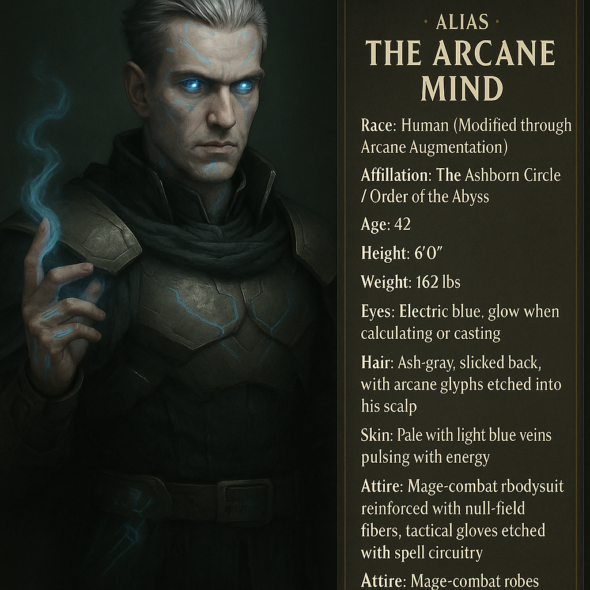

Kaelor

Name & Alias: Kaelor – The Strategist
Age / Race / Role: Unknown / Enhanced Human / Battlefield Tactician, Support Suppressor
Appearance: Sharp-featured man with silver armor etched in runes. Always seen adjusting his ocular scanner.
Affinities & Energy Types: Mind, Tactical Energy
Threat Tier: A+/S-Rank
Core Stats (0–10):
• Power: 6
• Speed: 7
• Technique: 9
• Intelligence: 10
• Defense: 7
• Aura Control: 7
Signature Abilities:
• Strategy Grid Deployment
• Mental Pulse Disruptor
• Reinforcement Barrier
• Thought Trap Relay
• Precision Null Zone
Personality Summary: Calculating, composed, and constantly adjusting strategy in real time. Rarely needs to speak to command.
Faction or Allegiances: Ashborn Circle (Order of the Abyss)